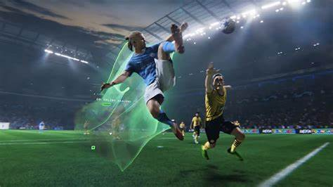
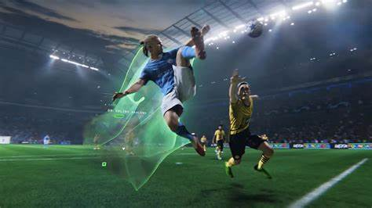

FC 25 (EA Sports FC 25)
FC 25 (EA Sports FC 25) es un juego de simulación de fútbol desarrollado por EA Sports. Es la continuación de la serie de juegos de fútbol de EA Sports, que anteriormente se conocía como FIFA.
Novedades:
Mejoras en la jugabilidad: El juego incluye mejoras en la jugabilidad, como un nuevo sistema de control de los jugadores y una mayor variedad de movimientos y habilidades.
Nuevas características: El juego puede incluir nuevas características, como un nuevo modo de juego o una mayor personalización de los jugadores y equipos.
En resumen, FC 25 es un juego de simulación de fútbol que ofrece una experiencia realista y emocionante para los fanáticos del deporte. Con sus gráficos de alta calidad, física realista y variedad de modos de juego, es una excelente opción para aquellos que buscan un juego de fútbol auténtico.
Características
- Modo de juego: El juego cuenta con diferentes modos de juego, como Ultimate Team, Carrera y Kick-Off, que permiten a los jugadores crear y personalizar sus equipos y jugadores.
- Gráficos y física El juego tiene gráficos de alta calidad y una física realista que simula el comportamiento de los jugadores y el balón en el campo.
- Jugadores y equipos: El juego cuenta con una gran cantidad de jugadores y equipos reales, incluyendo ligas y competiciones internacionales.
- Modo en línea: El juego permite a los jugadores competir en línea con otros jugadores de todo el mundo.